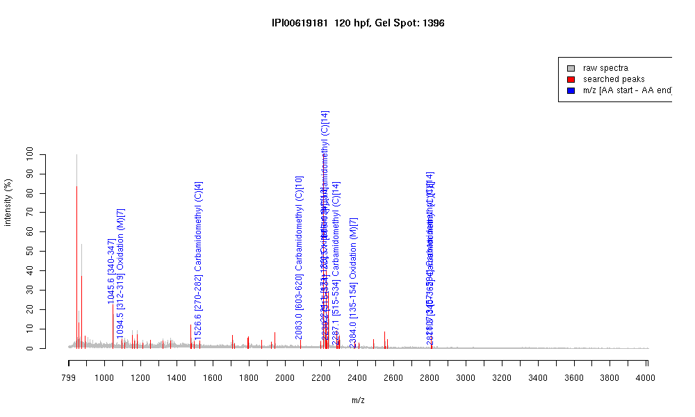

| Name | PREDICTED: similar to zinc finger protein585B |
|---|---|
| MW | 75720.3 |
| PI | 9.06 |
| Mascot Protein Score | 65 |
| Masses (matched / unmatched) | 11 / 43 |

| Peptide | MZ (calc) | MZ (observed) | Error (DA) | Error (PPM) | Start | Stop | Modifications |
|---|---|---|---|---|---|---|---|
| QYLTDHLR | 1045.5425 | 1045.5656 | 0.0231 | 22 | 340 | 347 | |
| QNYTEHMR | 1094.4684 | 1094.4877 | 0.0193 | 18 | 312 | 319 | Oxidation (M)[7] |
| SNTCHECGKSFTR | 1526.6475 | 1526.6266 | -0.0209 | -14 | 270 | 282 | Carbamidomethyl (C)[4] |
| VHSGEKPFTCDQCGKSFR | 2082.9482 | 2083.0071 | 0.0589 | 28 | 603 | 620 | Carbamidomethyl (C)[10] |
| VHTGEKPFTLNIMKMAFIK | 2221.1873 | 2221.1128 | -0.0745 | -34 | 171 | 189 | Oxidation (M)[13] |
| EHIKVHTGETPYTCHQCGK | 2225.0227 | 2225.1157 | 0.093 | 42 | 83 | 101 | Carbamidomethyl (C)[14] |
| VHTGEKPHICPQCGKSFTQK | 2225.0955 | 2225.1157 | 0.0202 | 9 | 115 | 134 | |
| SHMIIHSGEKPYACQICGKK | 2230.093 | 2230.1738 | 0.0808 | 36 | 515 | 534 | |
| SHMIIHSGEKPYACQICGKK | 2287.1145 | 2287.1443 | 0.0298 | 13 | 515 | 534 | Carbamidomethyl (C)[14] |
| QTLTEHMSTHTGEQRFPCHK | 2384.0872 | 2383.9995 | -0.0877 | -37 | 135 | 154 | Oxidation (M)[7] |
| SHLIIHSGEKPYSCQQCQSTFTQK | 2807.324 | 2807.301 | -0.023 | -8 | 571 | 594 | Carbamidomethyl (C)[14] |
| QYLTDHLRIHTGEKPYTCQYCGK | 2811.334 | 2811.2839 | -0.0501 | -18 | 340 | 362 | Carbamidomethyl (C)[18] |